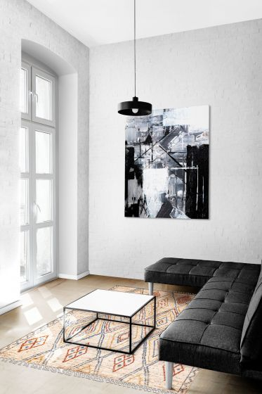
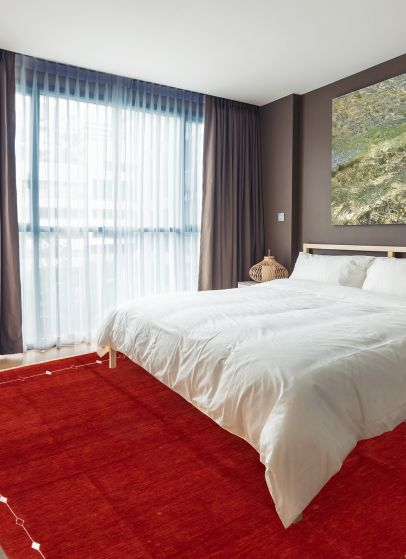

Portland rug showroom
Handmade rugs with heritage, texture, and soul.
Zagros Rugs curates traditional, tribal, vintage, modern, transitional, and kilim rugs for homes across Portland and the Pacific Northwest.
Ground your space in strength and style
Authentic area rugs in Portland, selected by people who know wool from the beginning.
Zagros Rugs is a family-owned rug store in Portland, Oregon, offering hand-selected area rugs with deep roots in Kurdish, Persian, Turkish, and village weaving traditions. Whether you are searching for a handmade wool rug, a vintage statement piece, a practical kilim, or a modern rug for a clean interior, our showroom helps you compare texture, color, scale, and craftsmanship in person.
Shop by style
Find the rug that fits the room and the story.
 Tribal Rugs
Bold symbols, mountain-born texture, and one-of-a-kind character.
Tribal Rugs
Bold symbols, mountain-born texture, and one-of-a-kind character.

Transitional Rugs Classic pattern language softened for today's rooms. Traditional Rugs Medallions, borders, florals, and heirloom craftsmanship.
Modern Rugs Clean lines, artful texture, and confident color restraint. Vintage Rugs Time-softened color, authentic wear, and lived-in soul. Kilim Rugs
Flat-woven color, lightweight utility, and graphic rhythm.
Kilim Rugs
Flat-woven color, lightweight utility, and graphic rhythm.
Why Zagros Rugs
A Portland rug store built on lived experience.
Our understanding of rugs starts with wool, family, handwork, and the mountain traditions behind each piece. We bring that background into every showroom conversation, helping customers choose rugs that feel beautiful today and meaningful for years.